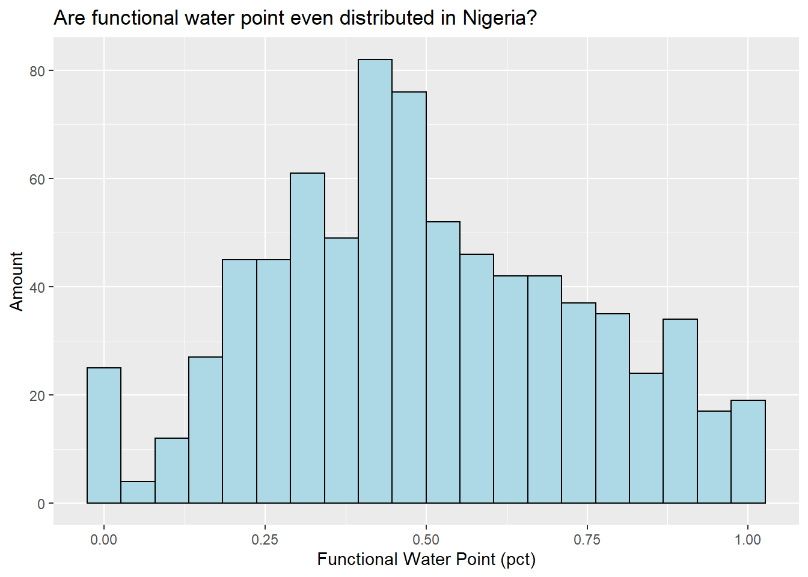
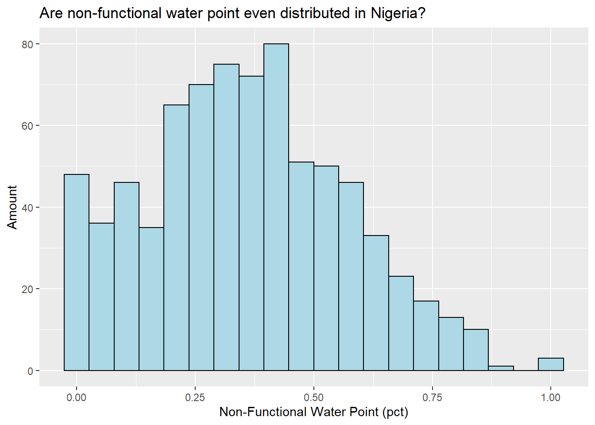

pacman::p_load(sf, tidyverse, tmap, spdep, funModeling)Take-home Exercise 1: Analysing and Visualising Spatial Patterns of Functional and Not Functional Water Points in Nigeria
1. Overview
1.1 Background
Water is an important resource to mankind. Clean and accessible water is critical to human health. It provides a healthy environment, a sustainable economy, reduces poverty and ensures peace and security. Yet over 40% of the global population does not have access to sufficient clean water. By 2025, 1.8 billion people will be living in countries or regions with absolute water scarcity, according to UN-Water. The lack of water poses a major threat to several sectors, including food security. Agriculture uses about 70% of the world’s accessible freshwater.
Developing countries are most affected by water shortages and poor water quality. Up to 80% of illnesses in the developing world are linked to inadequate water and sanitation. Despite technological advancement, providing clean water to the rural community is still a major development issues in many countries globally, especially countries in the Africa continent.
To address the issue of providing clean and sustainable water supply to the rural community, a global Water Point Data Exchange (WPdx) project has been initiated. The main aim of this initiative is to collect water point related data from rural areas at the water point or small water scheme level and share the data via WPdx Data Repository, a cloud-based data library.
1.2 Objectives
Geospatial analytics hold tremendous potential to address complex problems facing society. In this study, appropriate global and local measures of spatial Association techniques will be applied to reveals the spatial patterns of Functional and Not Functional water points in Nigeria.
2. Getting Started
The code chunk below will install and load sf, tidyverse, tmap, spdep and funModeling packages into R environment by using p_load() function.
3. Importing Geospatial Data
In this take-home exercise, two geospatial data sets will be used, they are:
geo_export
geoBoundaries-NGA-ADM2
3.1 Importing water point geospatial data
Code chunk below performs the following tasks:
st_read() function of sf package is used to import geo_export shapefile of water point geospatial data into R environment and save the imported geospatial data into simple feature data table.
st_transform() function of sf package is used to transform the feature data frame into decimal degree coordinates.
filter() function of dplyr package is used to extract water point records of Nigeria.
st_crs() function of sf package is use to check if the CSR is correct.
write_rds() function of readr package is used to save the extracted sf data table into an output file in rds data format.
wp <- st_read(dsn = "geodata", layer = "geo_export") %>%
st_transform(crs = 4326) %>%
filter(clean_coun == "Nigeria")st_crs(wp)write_rds(wp, "geodata/wp_nga.rds")3.2 Importing Nigeria LGA boundary data
Code chunk below performs the following task:
- st_read() function of sf package is used to import geoBoundaries-NGA-ADM2 shapefile into R environment and save the imported geospatial data into simple feature data table.
- st_transform() function of sf package is used to transform the feature data frame into decimal degree coordinates.
- st_crs() function of sf package is use to check if the CSR is correct.
nga <- st_read(dsn = "geodata",
layer = "geoBoundaries-NGA-ADM2") %>%
st_transform(crs = 4326)st_crs(nga)4. Checking the Content of A Simple Feature Data Frame
Code chunk below performs the following task:
- glimpse() report of dplyr package reveals the data type of each fields of the two datasets.
glimpse(wp)glimpse(nga)5. Data Wrangling
5.1 Recoding NA values into string
Code chunk below performs the following task:
- replace_na() function of tidyr package and mutate() function of dplyr package are used to recode all the NA values in status_cle field into Unknown for later analysis.
wp_nga <- read_rds("geodata/wp_nga.rds") %>%
mutate(status_cle = replace_na(status_cle, "Unknown"))5.2 EDA
Code chunk below performs the following task:
- freq() function of funModeling package is used to display the distribution of status_cle field in wp_nga.
freq(data=wp_nga,
input = 'status_cle')6. Extracting Water Point Data
6.1 Extracting funtional water point
Code chunk below performs the following tasks:
filter() function of dplyr package is used to extract Functional water point records of Nigeria.
freq() function of funModeling package is used to display the distribution of status_cle field in wpt_functional.
wpt_functional <- wp_nga %>%
filter(status_cle %in%
c("Functional",
"Functional but not in use",
"Functional but needs repair"))freq(data=wpt_functional, input = 'status_cle')6.2 Extracting non-funtional water point
Code chunk below performs the following tasks:
filter() function of dplyr package is used to extract Non-Functional water point records of Nigeria.
freq() function of funModeling package is used to display the distribution of status_cle field in wpt_nonfunctional.
wpt_nonfunctional <- wp_nga %>%
filter(status_cle %in%
c("Abandoned/Decommissioned",
"Abandoned",
"Non-Functional",
"Non functional due to dry season",
"Non-Functional due to dry season"))freq(data=wpt_nonfunctional, input = 'status_cle')6.3 Extracting water point with Unknown class
Code chunk below performs the following task:
- filter() function of dplyr package is used to extract Unknown water point records of Nigeria.
wpt_unknown <- wp_nga %>%
filter(status_cle == "Unknown")7. Performing Point-in-Polygon Count
Code chunk below performs the following tasks:
mutate() function of dplyr package is used to add new fields to nga_wp.
st_intersects() function of sf package is used to determine if a point in wp_nga intersects with a region in nga.
lengths() function is used to count the number of water points in each area corresponding to the functional type.
nga_wp <- nga %>%
mutate(`total wpt` = lengths(
st_intersects(nga, wp_nga))) %>%
mutate(`wpt functional` = lengths(
st_intersects(nga, wpt_functional))) %>%
mutate(`wpt non-functional` = lengths(
st_intersects(nga, wpt_nonfunctional))) %>%
mutate(`wpt unknown` = lengths(
st_intersects(nga, wpt_unknown)))8. Saving the Analytical Data Table
Code chunk below performs the following tasks:
- mutate() function of dplyr package is used to add new fields to nga_wp.
- write_rds() function of readr package is used to save the new analysed data frame into an output file in rds data format.
- replace_na() function of tidyr package is used to recode all the NA values in pct_functional & pct_non-functional fields into 0 for later analysis.
nga_wp <- nga_wp %>%
mutate(pct_functional = `wpt functional`/`total wpt`) %>%
mutate(`pct_non-functional` = `wpt non-functional`/`total wpt`)nga_wp <- nga_wp %>%
mutate(pct_functional = replace_na(pct_functional, 0)) %>%
mutate(`pct_non-functional` = replace_na(`pct_non-functional`, 0))write_rds(nga_wp, "geodata/nga_wp.rds")9. EDA
Code chunk below performs the following task:
- ggplot() function of ggplot2 package is used to plot a histogram to reveal the distribution of functional water point and non-functional water point.
nga_wp <- read_rds("geodata/nga_wp.rds")
ggplot(data=nga_wp,
aes(x= as.numeric(`pct_functional`)))+
geom_histogram(bins=20,
color="black",
fill="light blue") +
labs(title = "Are functional water point even distributed in Nigeria?",
x = "Functional Water Point (pct)",
y = "Amount")
ggplot(data=nga_wp,
aes(x= as.numeric(`pct_non-functional`)))+
geom_histogram(bins=20,
color="black",
fill="light blue") +
labs(title = "Are non-functional water point even distributed in Nigeria?",
x = "Non-Functional Water Point (pct)",
y = "Amount")
10. Visualising the spatial dsitribution of water points
Code chunk below performs the following tasks:
tm_shape() function is used to specify a shape object.
tm_fill() function is used to create a polygon layer.
tm_layout() function is used to adjust the layout.
tm_borders() function is used to create polygon borders.
tm_compass() function is used to create a map compass.
tm_scale_bar() function is used to create a scale bar.
tm_grid() function is used to create grid lines.
tmap_attange() function is used to create small multiples of separate maps.
all above functions are of tmap package.
total <- tm_shape(nga_wp)+
tm_fill("total wpt",
title = "total wpt") +
tm_layout(main.title = "Distribution of total water point in Nigeria",
main.title.position = "center",
main.title.size = 1.5,
legend.text.size = 0.7,
legend.height = 0.4,
legend.width = 0.3,
frame = TRUE) +
tm_borders(alpha = 0.5) +
tm_compass(type="8star", size = 2) +
tm_scale_bar() +
tm_grid(alpha =0.2)
wp_functional <- tm_shape(nga_wp)+
tm_fill("wpt functional",
title = "wpt functional") +
tm_layout(main.title = "Distribution of functional water point in Nigeria",
main.title.position = "center",
main.title.size = 1.5,
legend.text.size = 0.7,
legend.height = 0.4,
legend.width = 0.3,
frame = TRUE) +
tm_borders(alpha = 0.5) +
tm_compass(type="8star", size = 2) +
tm_scale_bar() +
tm_grid(alpha =0.2)
wp_nonfunctional <- tm_shape(nga_wp)+
tm_fill("wpt non-functional",
title = "wpt non-functional") +
tm_layout(main.title = "Distribution of non-functional water point in Nigeria",
main.title.position = "center",
main.title.size = 1.5,
legend.text.size = 0.7,
legend.height = 0.4,
legend.width = 0.3,
frame = TRUE) +
tm_borders(alpha = 0.5) +
tm_compass(type="8star", size = 2) +
tm_scale_bar() +
tm_grid(alpha =0.2)
unknown <- tm_shape(nga_wp)+
tm_fill("wpt unknown",
title = "wpt unknown") +
tm_layout(main.title = "Distribution of unknown water point in Nigeria",
main.title.position = "center",
main.title.size = 1.5,
legend.text.size = 0.7,
legend.height = 0.4,
legend.width = 0.3,
frame = TRUE) +
tm_borders(alpha = 0.5) +
tm_compass(type="8star", size = 2) +
tm_scale_bar() +
tm_grid(alpha =0.2)
tmap_arrange(total, wp_functional, wp_nonfunctional, unknown, asp=1.5, ncol=2)The 4 maps above show the distribution of total water points, functional water points, not functional water points and unknown water points in Nigeria.
11. Global Spatial Autocorrelation
11.1 Computing Contiguity Spatial Weights
Code chunk below performs the following task:
- ploy2nb() function of spdep package is used to compute Queen contiguity weight matrix.
- set.ZeroPolicyOption() function of spdep package if used to provide support for checking the mutual integrity of spatial neighbour weights and spatial data.
wm_q <- poly2nb(nga_wp, queen=TRUE)
set.ZeroPolicyOption(TRUE)The summary report above shows that there are 774 area units in Nigeria. The most connected area unit has 14 neighbours. There are two area units with only one neighbours and one area units with no neighbour.
11.2 Row-standardised weights matrix
Code chunk below performs the following task:
- nb2listw() function of spdep package is used to assign equal weight to each neighboring polygon.
rswm_q <- nb2listw(wm_q, style="W", zero.policy = TRUE)12. Cluster and Outlier Analysis
12.1 Computing local Moran’s I
Code chunk below performs the following task:
order() function is used to get a permutation which rearranges the shapeName field into ascending order.
localmoran() function of spdep package is used to compute local Moran’s I.
fips <- order(nga_wp$shapeName)
localMI_F <- localmoran(nga_wp$`wpt functional`, rswm_q)
localMI_NF <- localmoran(nga_wp$`wpt non-functional`, rswm_q)The matrix in localMI_F & localMI_NF contains the following values:
Ii: the local Moran’s I statistics
E.Ii: the expectation of local moran statistic under the randomisation hypothesis
Var.Ii: the variance of local moran statistic under the randomisation hypothesis
Z.Ii:the standard deviate of local moran statistic
Pr(): the p-value of local moran statistic
12.1.1 Mapping the local Moran’s I
Code chunk below performs the following task:
- cbind() function is used to append the two local Moran’s I data frames (localMI_F & localMI_NF) onto nga_wp SpatialPolygonDataFrame.
nga.localMI_F <- cbind(nga_wp,localMI_F) %>%
rename(Pr.Ii = Pr.z....E.Ii..)
nga.localMI_NF <- cbind(nga_wp,localMI_NF) %>%
rename(Pr.Ii = Pr.z....E.Ii..)write_rds(nga.localMI_F, "geodata/nga_localMI_F.rds")
write_rds(nga.localMI_NF, "geodata/nga_localMI_NF.rds")12.1.2 Mapping both local Moran’s I values and p-values
Code chunk below performs the following tasks:
tm_shape() function is used to specify a shape object.
tm_fill() function is used to create a polygon layer.
tm_layout() function is used to adjust the layout.
tm_borders() function is used to create polygon borders.
tmap_attange() function is used to create small multiples of separate maps.
all above functions are of tmap package.
nga.localMI_F <- read_rds("geodata/nga_localMI_F.rds")
nga.localMI_NF <- read_rds("geodata/nga_localMI_NF.rds")
localMI_F.map <- tm_shape(nga.localMI_F) +
tm_fill(col = "Ii",
style = "pretty",
midpoint = 0,
title = "local moran statistics") +
tm_layout(main.title = "Local Moran’s I Test for Functional Water Point",
main.title.position = "center",
main.title.size = 1.5,
legend.text.size = 0.7,
legend.height = 0.4,
legend.width = 0.3,
frame = TRUE) +
tm_borders(alpha = 0.5)
pvalue_F.map <- tm_shape(nga.localMI_F) +
tm_fill(col = "Pr.Ii",
breaks=c(-Inf, 0.001, 0.01, 0.05, 0.1, Inf),
palette="-Blues",
title = "local Moran's I p-values") +
tm_layout(main.title = "Local Moran’s I Test for Functional Water Point",
main.title.position = "center",
main.title.size = 1.5,
legend.text.size = 0.7,
legend.height = 0.4,
legend.width = 0.3,
frame = TRUE) +
tm_borders(alpha = 0.5)
localMI_NF.map <- tm_shape(nga.localMI_NF) +
tm_fill(col = "Ii",
style = "pretty",
midpoint = 0,
title = "local moran statistics") +
tm_layout(main.title = "Local Moran’s I Test for Non-Functional Water Point",
main.title.position = "center",
main.title.size = 1.5,
legend.text.size = 0.7,
legend.height = 0.4,
legend.width = 0.3,
frame = TRUE) +
tm_borders(alpha = 0.5)
pvalue_NF.map <- tm_shape(nga.localMI_NF) +
tm_fill(col = "Pr.Ii",
breaks=c(-Inf, 0.001, 0.01, 0.05, 0.1, Inf),
palette="-Blues",
title = "local Moran's I p-values") +
tm_layout(main.title = "Local Moran’s I Test for Non-Functional Water Point",
main.title.position = "center",
main.title.size = 1.5,
legend.text.size = 0.7,
legend.height = 0.4,
legend.width = 0.3,
frame = TRUE) +
tm_borders(alpha = 0.5)
tmap_arrange(localMI_F.map, pvalue_F.map, localMI_NF.map, pvalue_NF.map, asp=1.5, ncol=2)The 4 maps above detect the cluster and/or outlier of functional and not functional water points in Nigeria. Local Moran’s I values map and its corresponding p-values map is plotted next to each other for directly comparison and analysis.
13. Creating a LISA Cluster Map
13.1 Preparing LISA map classes
Code chunk below performs the following tasks:
vector() function is used to produce a simple vector with no attribute of the given length and mode.
lag.listw() function of spdep package is used to derive the spatially lagged variable of functional water point & non-functional water point.
DV_F & DV_NF field center the spatially lagged variable around its mean.
LM_I_F & LM_I_NF field center the local Moran’s around the mean.
signif variable is used to set a statistical significance level for the local Moran.
quadrant_F & quadrant_NF field get the low-low (1), low-high (2), high-low (3), high-high (4) and non-significant (0) categories.
quadrant_F <- vector(mode="numeric",length=nrow(localMI_F))
nga_wp$lag_FWP <- lag.listw(rswm_q, nga_wp$`wpt functional`)
DV_F <- nga_wp$lag_FWP - mean(nga_wp$lag_FWP)
LM_I_F <- localMI_F[,1]
signif <- 0.05
quadrant_F[DV_F <0 & LM_I_F>0] <- 1
quadrant_F[DV_F >0 & LM_I_F<0] <- 2
quadrant_F[DV_F <0 & LM_I_F<0] <- 3
quadrant_F[DV_F >0 & LM_I_F>0] <- 4
quadrant_F[localMI_F[,5]>signif] <- 0
quadrant_NF <- vector(mode="numeric",length=nrow(localMI_NF))
nga_wp$lag_NFWP <- lag.listw(rswm_q, nga_wp$`wpt non-functional`)
DV_NF <- nga_wp$lag_NFWP - mean(nga_wp$lag_NFWP)
LM_I_NF <- localMI_NF[,1]
quadrant_NF[DV_NF <0 & LM_I_NF>0] <- 1
quadrant_NF[DV_NF >0 & LM_I_NF<0] <- 2
quadrant_NF[DV_NF <0 & LM_I_NF<0] <- 3
quadrant_NF[DV_NF >0 & LM_I_NF>0] <- 4
quadrant_NF[localMI_NF[,5]>signif] <- 013.2 Saving the LISA map Analytical Data Table
Code chunk below performs the following task:
- write_rds() function of readr package is used to save the LISA map analytical data table into an output file in rds data format.
nga.localMI_F$quadrant <- quadrant_F
nga.localMI_NF$quadrant <- quadrant_NF
write_rds(nga.localMI_F, "geodata/nga_localMI_F.rds")
write_rds(nga.localMI_NF, "geodata/nga_localMI_NF.rds")13.3 Plotting LISA map
Code chunk below performs the following tasks:
qtm() function is used to draw a thematic map.
tm_shape() function is used to specify a shape object.
tm_fill() function is used to create a polygon layer.
tm_layout() function is used to adjust the layout.
tm_view() function is used to set the options for the interactive tmap viewer.
tm_borders() function is used to create polygon borders.
tmap_attange() function is used to create small multiples of separate maps.
all above functions are of tmap package.
fwp <- qtm(nga_wp,"wpt functional") +
tm_layout(main.title = "Distribution of Functional Water Point in Nigeria",
main.title.position = "center",
main.title.size = 1.5,
legend.text.size = 0.7,
legend.height = 0.4,
legend.width = 0.3,
frame = TRUE)
colors <- c("#ffffff", "#2c7bb6", "#abd9e9", "#fdae61", "#d7191c")
clusters <- c("insignificant", "low-low", "low-high", "high-low", "high-high")
LISAmap_F <- tm_shape(nga.localMI_F) +
tm_fill(col = "quadrant",
style = "cat",
palette = colors[c(sort(unique(nga.localMI_F$quadrant)))+1],
labels = clusters[c(sort(unique(nga.localMI_F$quadrant)))+1],
popup.vars = c("")) +
tm_layout(main.title = "LISA Map of Functional Water Point in Nigeria",
main.title.position = "center",
main.title.size = 1.5,
legend.text.size = 0.7,
legend.height = 0.4,
legend.width = 0.3,
frame = TRUE) +
tm_view(set.zoom.limits = c(11,17)) +
tm_borders(alpha=0.5)
nfwp <- qtm(nga_wp,"wpt non-functional") +
tm_layout(main.title = "Distribution of Non-Functional Water Point in Nigeria",
main.title.position = "center",
main.title.size = 1.5,
legend.text.size = 0.7,
legend.height = 0.4,
legend.width = 0.3,
frame = TRUE)
LISAmap_NF <- tm_shape(nga.localMI_NF) +
tm_fill(col = "quadrant",
style = "cat",
palette = colors[c(sort(unique(nga.localMI_NF$quadrant)))+1],
labels = clusters[c(sort(unique(nga.localMI_NF$quadrant)))+1],
popup.vars = c("")) +
tm_layout(main.title = "LISA Map of Non-Functional Water Point in Nigeria",
main.title.position = "center",
main.title.size = 1.5,
legend.text.size = 0.7,
legend.height = 0.4,
legend.width = 0.3,
frame = TRUE) +
tm_view(set.zoom.limits = c(11,17)) +
tm_borders(alpha=0.5)
tmap_arrange(fwp, LISAmap_F, nfwp, LISAmap_NF, asp=1.5, ncol=2)The 4 maps above shows the LISA map for functional and not functional water points in Nigeria. Compared to Moran’s I Test, LISA provides a statistic for each location with an assessment of significance and it establishes a proportional relationship between the sum of the local statistics and a corresponding global statistic.
The distribution map of functional and not functional water points is plotted next to the corresponding LISA map for effective interpretation.
14. Hot Spot and Cold Spot Area Analysis
14.1 Deriving distance-based weight matrix
14.1.1 Deriving the centroid
Code chunk below performs the following tasks:
st_centroid() function of sf package with map_dbl() function is used to get the centroid of every region in Nigeria, the 1st value is longitude and the 2rd value is latitude.
cbind() function is used to combine longitude and latitude to coords.
longitude <- map_dbl(nga_wp$geometry, ~st_centroid(.x)[[1]])
latitude <- map_dbl(nga_wp$geometry, ~st_centroid(.x)[[2]])
coords <- cbind(longitude, latitude)14.1.2 Determine the cut-off distance
Code chunk below performs the following tasks:
knearneigh() function is used to get a matrix with the indices of points belonging to the set of the k nearest neighbours of each other.
knn2nb() function is used to convert the knn object returned by knearneigh() into a neighbours list of class nb with a list of integer vectors containing neighbour region number ids.
nbdists() function is used toget the length (km) of neighbour relationship edges.
all 3 functions above are of spdep package.
unlist() function is used to remove the list structure of the returned object.
k1 <- knn2nb(knearneigh(coords))
k1dists <- unlist(nbdists(k1, coords, longlat = TRUE))
summary(k1dists)14.1.3 Computing fixed distance weight matrix
Code chunk below performs the following tasks:
dnearneigh() function of spdep package is used to compute the distance weight matrix.
nb2listw() function of spdep package is used to convert the nb object into spatial weights object.
wm_d72 <- dnearneigh(coords, 0, 72, longlat = TRUE)
wm72_lw <- nb2listw(wm_d72, style = 'B')
summary(wm72_lw)14.1.4 Computing adaptive distance weight matrix
Code chunk below performs the following tasks:
knearneigh() function is used to get a matrix with the indices of points belonging to the set of the k nearest neighbours of each other.
knn2nb() function is used to convert the knn object returned by knearneigh() into a neighbours list of class nb with a list of integer vectors containing neighbour region number ids.
nb2listw() function is used to convert the nb object into spatial weights object.
all 3 functions above are of spdep package.
knn <- knn2nb(knearneigh(coords, k=14))
knn_lw <- nb2listw(knn, style = 'B')
summary(knn_lw)14.2 Computing Gi statistics
14.2.1 Gi statistics using fixed distance
Code chunk below performs the following task:
- localG() function of spdep package is used to calculate the local spatial statistic G based on the spatial weights object used.
gi.fixed_F <- localG(nga_wp$`wpt functional`, wm72_lw)
gi.fixed_NF <- localG(nga_wp$`wpt non-functional`, wm72_lw)
nga.gi <- cbind(nga_wp, as.matrix(gi.fixed_F),as.matrix(gi.fixed_NF)) %>%
rename(gstat_fixed_F = as.matrix.gi.fixed_F.) %>%
rename(gstat_fixed_NF = as.matrix.gi.fixed_NF.)14.2.2 Gi statistics using adaptive distance
Code chunk below performs the following task:
- localG() function of spdep package is used to calculate the local spatial statistic G based on the spatial weights object used.
gi.adaptive_F <- localG(nga_wp$`wpt functional`, knn_lw)
gi.adaptive_NF <- localG(nga_wp$`wpt non-functional`, knn_lw)
nga.gi <- cbind(nga.gi, as.matrix(gi.adaptive_F), as.matrix(gi.adaptive_NF)) %>%
rename(gstat_adaptive_F = as.matrix.gi.adaptive_F.) %>%
rename(gstat_adaptive_NF = as.matrix.gi.adaptive_NF.)14.2.3 Saving the AnalyGi Statistics Analytical Data Table
Code chunk below performs the following task:
rename() function of dplyr package is used to correct the field name.
write_rds() function of readr package is used to save the AnalyGi statistics analytical data table into an output file in rds data format.
nga.gi <- nga.gi %>%
rename('total wpt' = total.wpt,
'wpt functional' = wpt.functional,
'wpt non-functional' = wpt.non.functional,
'wpt unknown' = wpt.unknown,
'pct_non-functional' = pct_non.functional) write_rds(nga.gi, "geodata/nga_wp.rds")14.2.4 Mapping Gi values with fixed distance weights
Code chunk below performs the following tasks:
tm_shape() function is used to specify a shape object.
tm_fill() function is used to create a polygon layer.
tm_layout() function is used to adjust the layout.
tm_borders() function is used to create polygon borders.
tmap_attange() function is used to create small multiples of separate maps.
all above functions are of tmap package.
Gimap_F <-tm_shape(nga_wp) +
tm_fill(col = "gstat_fixed_F",
midpoint = 0,
style = "pretty",
palette="-RdBu",
title = "local Gi") +
tm_layout(main.title = "Hot Spot and Cold Spot Map of Functional Water Point in Nigeria",
main.title.position = "center",
main.title.size = 1.5,
legend.text.size = 0.7,
legend.height = 0.4,
legend.width = 0.3,
frame = TRUE) +
tm_borders(alpha = 0.5)
Gimap_NF <-tm_shape(nga_wp) +
tm_fill(col = "gstat_fixed_NF",
midpoint = 0,
style = "pretty",
palette="-RdBu",
title = "local Gi") +
tm_layout(main.title = "Hot Spot and Cold Spot Map of Non-Functional Water Point in Nigeria",
main.title.position = "center",
main.title.size = 1.5,
legend.text.size = 0.7,
legend.height = 0.4,
legend.width = 0.3,
frame = TRUE) +
tm_borders(alpha = 0.5)
tmap_arrange(fwp, Gimap_F, nfwp, Gimap_NF, asp=1.5, ncol=2)
The 4 maps above show the hot & cold spot(the amount of functional and not functional water points of regions higher & lower relative to its surroundings) by using fixed distance weights.
The distribution map of functional and not functional water points is plotted next to the corresponding hotspot map for more visual comparison.
14.2.5 Mapping Gi values with adaptive distance weights
Gimap_F <-tm_shape(nga_wp) +
tm_fill(col = "gstat_adaptive_F",
midpoint = 0,
style = "pretty",
palette="-RdBu",
title = "local Gi") +
tm_layout(main.title = "Hot Spot and Cold Spot Map of Functional Water Point in Nigeria",
main.title.position = "center",
main.title.size = 1.5,
legend.text.size = 0.7,
legend.height = 0.4,
legend.width = 0.3,
frame = TRUE) +
tm_borders(alpha = 0.5)
Gimap_NF <-tm_shape(nga_wp) +
tm_fill(col = "gstat_adaptive_NF",
midpoint = 0,
style = "pretty",
palette="-RdBu",
title = "local Gi") +
tm_layout(main.title = "Hot Spot and Cold Spot Map of Non-Functional Water Point in Nigeria",
main.title.position = "center",
main.title.size = 1.5,
legend.text.size = 0.7,
legend.height = 0.4,
legend.width = 0.3,
frame = TRUE) +
tm_borders(alpha = 0.5)
tmap_arrange(fwp, Gimap_F, nfwp, Gimap_NF, asp=1.5, ncol=2)The 4 maps above show the hot & cold spot(the amount of functional and not functional water points of regions higher & lower relative to its surroundings) by using adaptive distance weights.
The distribution map of functional and not functional water points is plotted next to the corresponding hotspot map for more visual comparison.
15. Conclusions
By analyzing and comparing the distribution maps, cluster and outlier maps and hotspot maps of functional and non-functional water points in Nigeria visualized above, we can see that water points in Nigeria are not evenly distributed geographically across the country and there is a very clear clustering situation. Especially, the functional water points are basically concentrated in the northern part of Nigeria. The distribution of non-functional water points, although more dispersed than the distribution of functional water points, is also clustered in the central, southwestern, southern and central-eastern parts of the country. The eastern and northwestern part of the country is largely devoid of water points, both functional and non-functional. Both functional and non-functional water points are basically centered in certain areas and decrease towards the surrounding neighbors. Based on the three types of maps, we can conclude that the northwestern and eastern parts of the country are extremely poor in both functional and non-functional water points and therefore have problems in accessing water for the population of the region. Based on the above analysis, the Nigerian government can further plan for the establishment of facilities to help balance the access to water in the northwest and east regions.